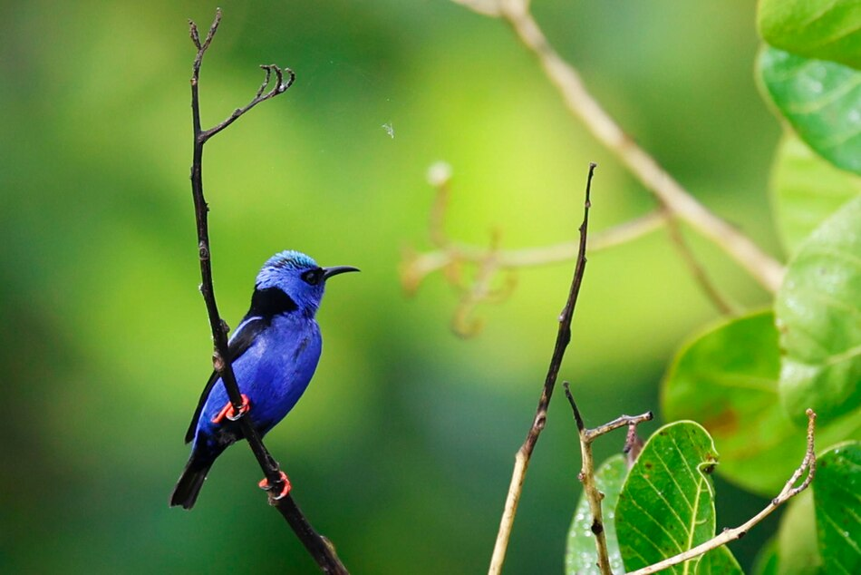

Observación
Panamá celebró este sábado el Global Big Day
Cientos de observadores recorrieron parques, bosques y comunidades rurales, reafirmando al país como destino imprescindible para la observación de aves.
Leer noticia completa ↗